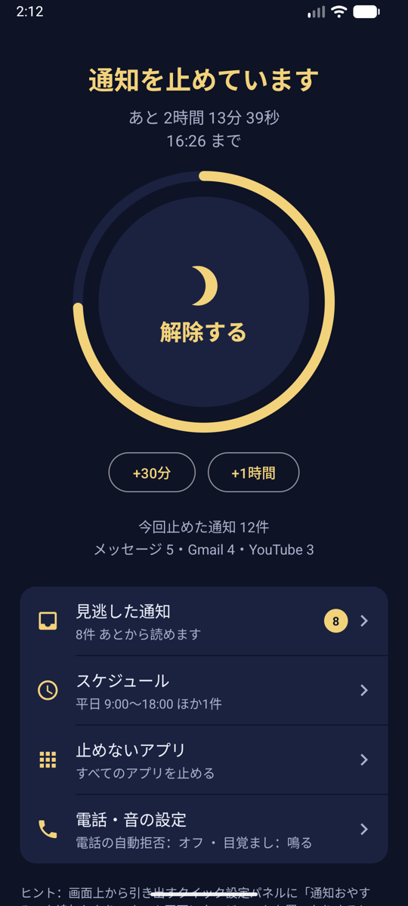

通知おやすみ
ボタンひとつで、決めた時間だけすべての通知を止めます。止めている間に届いた通知は、あとから読めます。
Google Play でインストールするAndroid 8.0 以上・無料(画面の下に広告が出ます)

30分・1時間・朝まで・時刻指定から長さを選んで、ボタンを押すだけです。時間が来たら自動で元に戻ります。「毎日 23:00〜7:00」のようなスケジュールで自動で止めることも、家族の連絡など止めたくないアプリや電話だけを通すこともできます。
通知の内容はスマホの中だけで扱い、外部には送りません。プライバシーポリシー / Privacy Policy